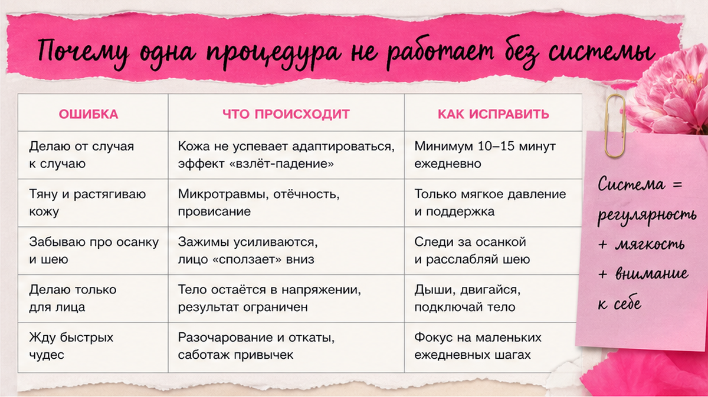
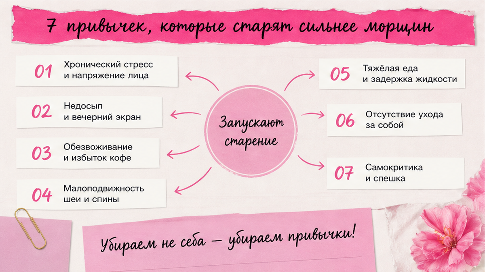
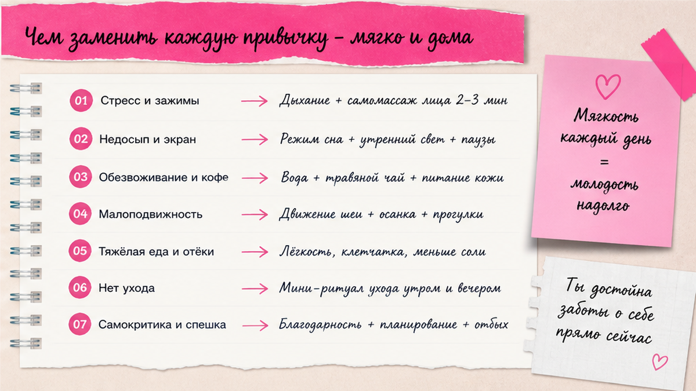

Омоложение лица дома - это не одна маска и не разовая процедура, а привычки: сон, осанка, SPF, движение лица и шеи, вода и спокойный уход без гонки. Сначала уберите 7 привычек, которые старят сильнее морщин, потом добавьте мягкую систему на 14 дней - без обещаний «минус 10 лет за месяц».
Морщины редко появляются «просто от возраста». Чаще их ускоряют повторяющиеся мелочи: лицо в подушку, сутулость, сжатые зубы, редкий SPF и крем без движения. Омоложение как образ жизни начинается с честного списка привычек - и только потом с сывороток.
Разберём, почему одна процедура не спасает, какие 7 привычек старят быстрее морщин, чем кажется, и дам план первой недели и чеклист на 14 дней - по-человечески, для женщин 40+.
Ко мне часто приходят уставшие от «волшебных» обещаний.
«Елена, я сделала курс масок. Купила прибор. Сходила на массаж. А через месяц лицо снова усталое».
И почти всегда, когда мы разбираем день по часам, находится не «плохой крем».
А система.
Или её отсутствие.
Лицо - зеркало привычек.
Не в мистическом смысле.
В банальном: кожа запоминает, как вы спите, дышите, сидите и улыбаетесь.
Омоложение лица начинается не с витрины аптеки, а с того, что вы повторяете каждый день без раздумий — и это работает в любом возрасте.

Процедура может дать отёк уйти, тонус на день-два, свежий цвет.
Это хорошо.
Но если каждую ночь вы спите лицом в подушку, а днём сутулитесь за ноутбуком, ткани возвращаются к привычной схеме.
Механизм. Кожа - орган. Ей нужны: сон, кровоток, движение мышц, защита от солнца, влага.
Крем работает на поверхности.
Мышцы и осанка задают «каркас».
Без каркаса даже дорогой уход - как полировка мебели, которую каждый день снова царапают.
❌ Ловушка «куплю и забуду»:
✅ Что реально держит результат:
Если у вас уже есть проблема с осанкой и лицом, это первый пункт системы, не «потом».

Ниже - не мораль, а наблюдение из практики. Узнаёте себя - не ругайте, меняйте по одному пункту.
1. Сон лицом в подушку. Кожа мнётся часами. Утром - заломы. К вечеру - «уставшее» лицо. Особенно на одной стороне.
2. SPF только на море. Ультрафиолет старит каждый день. Даже у окна. Даже в городе. Без SPF крем борется с последствиями, а не с причиной.
3. Сутулость и голова вперёд. Шея укорачивается, овал «течёт», подбородок визуально усиливается. Связка с лицом - прямая.
4. Сжатые зубы и стресс в челюсти. Жевательные перегружены - нижняя треть тяжелеет, линии у рта глубже. Часто женщины не замечают этого днём.
5. Только крем, без движения. Кожа увлажнена, мышцы «спят». Овал не держится. Фейс-йога и мягкая шея - не замена ухода, а пара к нему.
6. Мало воды и много сладкого на автомате. Кожа отражает общий фон: отёк, тусклость. Это не про «2 литра любой ценой», а про регулярность и меньше сахарных скачков.
7. Гонка за процедурами без домашней базы. Новый салон, новый пилинг, новый стресс «надо успеть». Лицо устает от хаоса сильнее, чем от возраста.
Замечали: после отпуска лицо отдыхает, а через неделю офиса - снова «серое»?
Это не потому что отпуск волшебный.
Там меняется пакет привычек: сон, прогулки, меньше экрана, меньше сжатых плеч.
Омоложение как образ жизни - про то, чтобы перенести 2-3 элемента отпуска в обычную неделю, а не ждать следующего августа.
💡 Одна морщина редко виновата сама по себе. Обычно это пакет из 3-4 привычек, который вы видите в зеркале к 17:00.

Не нужно менять жизнь за weekend. Достаточно микро-замен.
Сон. Попробуйте на спине хотя бы первый час. Или подушку поменьше, смену стороны осознанно. Шелковый наволочка - не магия, но трение меньше.
SPF. Одно средство на каждый день, которое не раздражает. Наносить на шею и декольте тоже - не только щёки.
Осанка. Раз в час - 20 секунд: плечи вниз, подбородок чуть назад. Раз в день - упражнение Рамка 5 повторов.
Челюсть. Напоминание на телефоне: «зубы разомкнуты». Раз в неделю - мягкий буккальный массаж, если нет противопоказаний.
Движение. 5 минут утром: лимфа, растяжка шеи, 2-3 любимых упражнения для лица. Не 40 минут через силу.
Вода и сладкое. Стакан воды утром до кофе. Сладкое - после еды, не «на нервы» натощак. Это уже меняет отёк к вечеру.
Система ухода. Утро: мягкое очищение + SPF. Вечер: очищение + одно активное средство по типу кожи. Не пять новых флаконов параллельно.
На консультациях часто вижу косметичку, где половина флаконов не открыта.
Лицу нужна не коллекция, а пара продуктов, которые вы наносите 5 дней из 7.
Если кожа реактивная - сначала упростите, потом добавляйте.
Сделайте: выберите один пункт из списка на эту неделю. Не делайте: все семь с понедельника.
План на 7 дней - без фанатизма.
Тип кожи и триггеры - диагностика кожи поможет не покупать лишнее.
Если вечером нет сил на полный ритуал - сократите до двух шагов: умывание и одно средство.
Лучше коротко каждый день, чем «идеальный» уход раз в неделю.
На днях 5-7 не добавляйте новое - закрепите то, что уже зашло.
Через неделю спросите себя: что было проще всего?
Именно это и станет ядром вашей системы на следующие 14 дней.
Миниплан на две недели.
Каждое утро: SPF + стакан воды + 30 секунд осанки.
Каждый вечер: очищение + уход + 5 минут движения (лицо или шея).
3 раза в неделю: Рамка или мягкая шея, лимфа без красных следов.
1 раз в неделю: фото в одном свете, сравнение с днём 1.
Не менять: весь набор косметики за одну покупку.
| Привычка | Минимум | Не надо |
|---|---|---|
| SPF | Ежедневно, 1 средство | SPF только летом |
| Сон | 1 час на спине или смена стороны | Менять все подушки в доме за раз |
| Движение | 5 мин вечером | Час через боль |
| Уход | Утро + вечер, 2-3 продукта | 10 активов сразу |
| Процедуры | База 14 дней, потом салон | Салон вместо базы |
На второй неделе добавьте один пункт из списка «7 привычек», который ещё не трогали.
Например: если неделю держали SPF - подключите Рамку три раза.
Если уже делали Рамку - проверьте сон: на какой стороне просыпаетесь чаще.
Так система растёт слоями, а не ломается от перегруза.
❌ Что ломает систему:
✅ Что помогает держаться:
Ещё одна ловушка - покупать «омолаживающий» набор каждый сезон.
Новая линейка даёт эмоцию на три дня.
А привычки остаются прежними.
Лучше один SPF, который не раздражает, и вечерний ритуал без телефона в руке.
Многие клиентки говорят: «Я не верю, что 5 минут что-то меняют».
Через две недели та же фраза звучит иначе - когда к вечеру нет «маски усталости».
Не потому что морщины исчезли.
А потому что лицо перестало бороться с вами весь день.
Омоложение как образ жизни - это не идеальность. Это когда тело и лицо перестают работать против вас каждый день.
SPF утром + вечернее очищение + 5 минут движения (шея или лимфа). Этого достаточно для старта. Остальное - по одному пункту в неделю.
Крем увлажняет и защищает. Но без SPF, сна и движения мышц эффект ограничен. Система важнее одного флакона.
Могут дополнять, если есть база дома. Если базы нет, результат процедуры быстро «съедают» привычки.
Чаще всего: солнце без SPF, сон лицом в подушку, сутулость, стресс в челюсти. Начните с того, что узнаёте в себе без спора.
Да, мягкий тонус и лимфа работают в любом возрасте. Важнее регулярность, чем сложность.
Ощущение свежести - 7-10 дней. На фото в одном свете - обычно 3-4 недели. Быстрее обещают только уколы и фильтры.
Один пункт в неделю. Отметка в календаре «5 минут вечером». Без наказания, если пропустили день.
Да, если речь о тонусе, отёке, цвете и мелких заломах от привычек. Система из SPF, движения и сна даёт заметный «отдых» для лица. Глубокие изменения - к врачу, не к маскам из блога.
Не диета-каратель, а меньше сахарных скачков и больше регулярности с едой и водой. Лицо часто отвечает на отёк, не на «идеальный рацион».
Достоверность: материал основан на практике Елены Шимановской. Не медицинская рекомендация. При выраженных изменениях кожи, боли, аллергии - дерматолог.
🔥 Мой Telegram-канал «Silver Cream»
❓ Какая привычка из семи - ваша? Спите на боку? Забываете SPF? Сжимаете зубы? Напишите в комментариях ⤵️